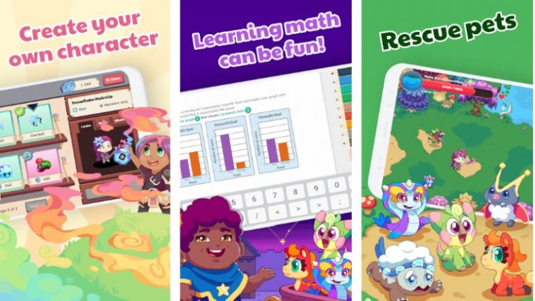

- Role-Playing Games (RPGs)
- Massively Multiplayer Online games (MMO)
- Massively Multiplayer Online Role-Playing Games (MMORPG)
- Simulation Games
- First-Person Shooter Games (FPS)
- Strategy Games
- Action Games
- Action-Adventure Games
- Real-Time Strategy (RTS)
- Sports Games
- Educational Games
- Adventure Games
- Puzzle Games
- MultiPlayer Online Battle Games (MOBA)
- Survival Games
- City-Building Games
- Racing Games
In these types of games, the player takes on the role of a character such as a hero, normally in a fantasy or science fiction setting. These types of games usually have a well-defined story and setting divided into a set of quests. The origin of RPGs can be traced back to Dungeons & Dragons, which was a table-top game. Role-playing games are some of the most popular games out there.
These games normally feature massive open worlds and are played on network-enabled platforms or via the internet. In these types of games, players utilize a network to interact with other players in a virtual game world. These worlds continue to exist even when a player exits the game, hence, these worlds are persistently existing regardless of what the player does. Depending on the game, players can either compete against each other or cooperate to accomplish a certain objective. MMOs allow players to play with/against other players from all over the world. The number of players can reach up to thousands of numbers. MMOs fall under different gameplay techniques, for example, first-person shooter, role-playing games, or real-time strategy games. MMO also appear over various genres including : racing, combats, sports, social, amongst others. If you have a smartphone, tablet, or internet-enabled video gaming console, then you can easily engage in a massively multiplayer online game.
As the name suggests, these types of games combine the elements of MMOs with the elements of RPGs. They feature huge persistent virtual worlds where many players (normally in the hundreds to thousands) interact with each other. The worlds of MMORPGs are small and it is ever-existing. This is even if the layers leave the area. As a player, you take on the role of a character and can compete with other players or co-oporate with them in the same world. One of the main reasons why MMORPG games are so popular with so many players is due to the fact that they have to compete against or cooperate with other players' in the same category. MMORPG adds elements of sorcery, crime, and science fiction.
Simulation games are designed to mimic a real or fictional reality and are aimed at immersing the player in the simulation of a particular event or situation. They are also referred to as 'god games' due to the level of control they offer players. If you are looking for fun or a way to train what you have learned in the environment then simulation games are a great way of achieving your objectives.
First-person shooter games constitute a sub-genre of the action games genre and are some of the most popular games around. These types of games are played from the main character's perspective or point of view. Unlike third-person shooter games where the player views a character from behind, FPS games presents the story and setting of the game from the perspective of the character. They feature three-dimension environments and are mainly focused on weapon-based combat. As a player, you view what the player sees.
Strategy games are games that target the planning and resource management skills of players. In order to overcome a certain challenge or achieve a certain goal, the players have to come up with and utilize a well thought out strategy and wisely use the available resources.
It is worth mentioning that, at the moment, action games are the most popular video game genre. These types of games present players with physical challenges such as reaction time and hand-eye coordination. In most games, the main character navigates through various levels while avoiding obstacles and fighting enemies. Action games present players with relentless action from one chapter to the next which makes these types of games very addictive.
These types of games add certain elements of action games to the adventure genre. The action-adventure genre is considered as the most diverse video game genre due to the unique elements that it brings together. These games often involve overcoming challenges and obstacles using tools and items collected.
The real-time strategy genre traces its origin to an 80's game called The Ancient Art of War. Most RTS games allow you to create additional population units, secure areas of the map, and defeat their enemies' attack units. It enables you to develop military and civilian structures in the game. Though it started out as a simple concept, the genre has been greatly improved over the years. However, when it comes to building and maintaining military structures within the game, it is not a straight-forward task but it is essential to realizing these goals. In modern RTS games, players build and maintain resources such as bases, while spawning combat units to defeat the opponent.

These games are designed to simulate particular sports such as football, soccer, basketball, golf, and any other sport even Olympic sports. Many such video games are considered simulation games due to their high level of realism and immersion. Sports games enable you to engage in various kind of sporting activities that you might not not be be able to engage in real life. In these kinds of video games, players can match up against computer-controlled opponents or other players either on the same device or through a network.

These games are designed with younger players in mind. They are geared towards helping players learn something regarding a particular subject or topic. Educational games have been used to help children learn how to read, do math, and to develop a deeper interest in certain subjects and topics. They present a fun way for kids to learn and exercise their brains.

In these types of games, the player takes on the role of a character and has to interact with the environment and other characters to search for clues and solve puzzles in order to advance. Adventure games are mainly focused on exploration and puzzle-solving. These types of games lack the elements of action games and are mainly designed for a single player, and hence, they aren't popular with many gamers.

Puzzle games are also referred to as logic video games. In these types of games, the players are expected to solve a particular problem in order to progress. Almost all puzzle games take place o n a single screen or restricted play area. Puzzle Games have two subgenres and they are: Logic Games – In a logic video game, the player is expected to solve logic puzzles or navigate complex locations same as a maze in order to progress to the next stage. A good example of a logic game is Tetris. Trivia Games – In these types of games, the player has to come up and input the answer to a question before a timer expires or before their opponent in order to win. Mobile trivia games have become quite popular nowadays as they are designed for casual play.
MOBA games bring together elements of action games, real-time strategy games, and role-playing games. Hence these types of games are also referred to as action real-time strategy or simply 'A-RTS'. In these types of games, the player controls one character in a team and takes on a specific role within the team. These roles include support, where players taking on these roles aim to distract the enemies as the integral members of the team attack them. The ultimate goal is usually to destroy computer-controlled units and overcome the opposing teams. In MOBA games, the players don't develop and maintain resources such as combat units or bases.
Survival games are a popular sub-genre of action video games. These types of games are set in intense challenging open-world environments in which the player has to survive for as long as possible. Generally, the player starts with basic equipment and is given access to various resources as they progress. The player is required to craft weapons, tools and shelter to enable them survive. The more intense the challenges get, the more superior the resources they get. Survival games can be based on procedurally or randomly generated environments. A majority of survival games don't follow any particular storylines or have any set objectives except to survive, which means that they are o pen-ended.
City-building games are a sub-genre of simulations games. They have been around for many years and due to their level of realism, city-building games have continually presented themselves as a formidable foe against the traditional architectures. As the name suggests, city-building games involve the construction of virtual cities. These types of games can be based on a high-rise metropolitan or a flourishing colony in space. As a player, you can construct any city or place you think of. City-building games are renowned for enhancing creativity and quickening problem-solving. These types of games allow us to control virtual citizens and to showcase your creativity. City-building games are so popular that they have been labeled as addictive games. Since these types of games need care and attention from the player, they provide a sense of accomplishment when a player successfully accomplished a task. Though developing and maintaining a city is challenging, city-building games provide a fun way of doing so.
Racing games are considered a subgenre of simulation games. Racing games simulate racing events and tournament events. They allow players to drive cars, motorbikes, and airplanes that the players can never afford. If you are looking to enhance your adrenaline and reveal your hidden competitive side, then you should consider engaging in a racing game. Regardless of what your interests are, from go-carting to photo-realistic formula 1 car racing, custom racing games are designed to unleash the speed demon within us. At the moment, there are many vehicle simulations including flight training and all other types of training that are dedicated to accuracy and realism. Most people who love gaming are big fans of racing. Hence, with racing games, they are able to achieve what they can't just by sparing a few minutes.